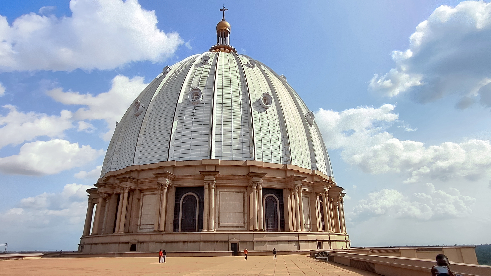
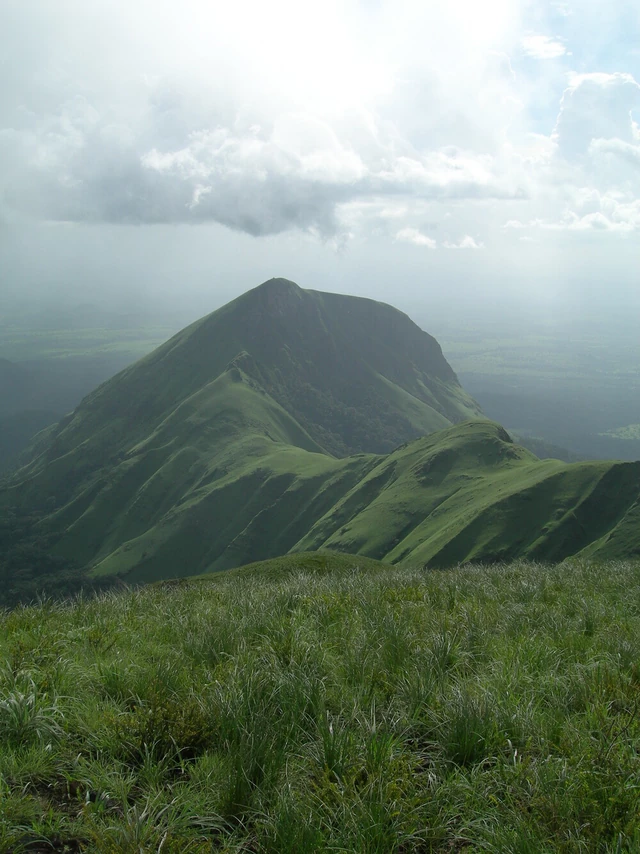
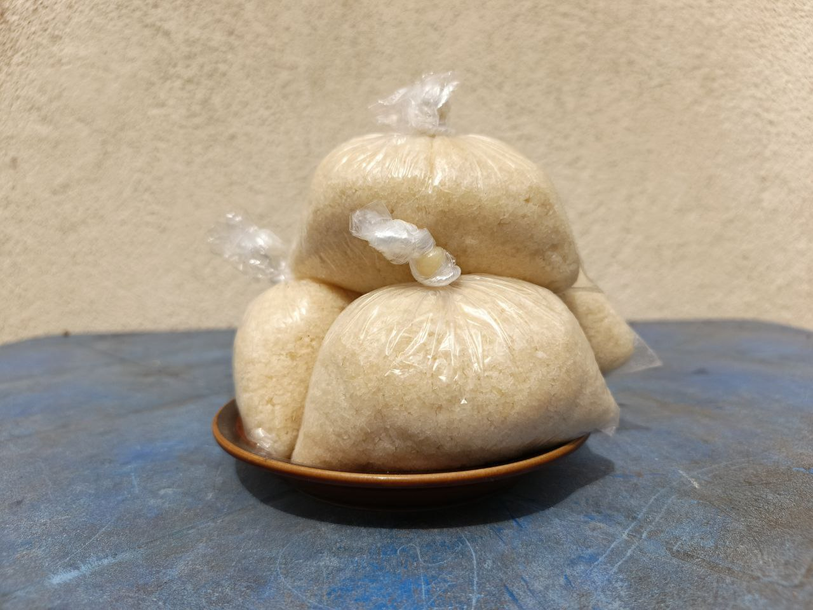
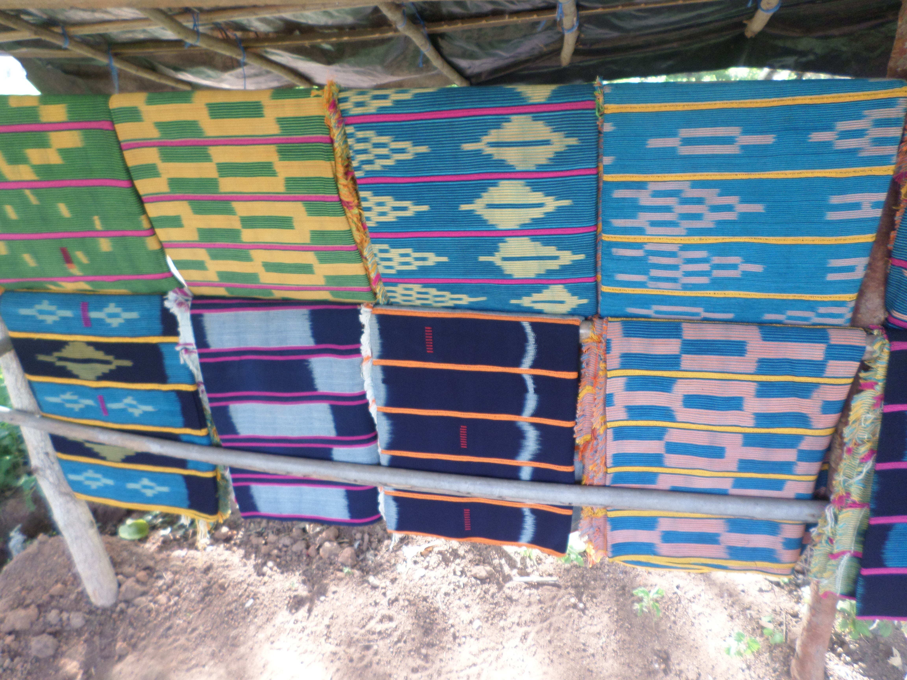

Côte d'Ivoire sits on the Gulf of Guinea and is known for the energy of Abidjan, the administrative capital of Yamoussoukro, and a landscape that stretches from coastal lagoons to forest zones and northern savanna. More than sixty ethnic groups contribute to the country's identity, while French serves as the official language alongside many widely spoken local languages.
The country is often introduced through its cocoa economy, but its deeper story is equally compelling: Guro dance traditions, Baule performance art, handwoven prestige cloths, beloved dishes such as attieke and alloco, and a history shaped by regional trade, colonial rule, and independence in 1960.


Côte d'Ivoire includes four broad natural regions: a narrow coastal fringe, forested areas in the south and west, a cultivated forest belt, and a northern savanna plateau. The country moves from busy lagoon cities to protected natural spaces, with places like the Mount Nimba reserve and Komoe National Park highlighting its ecological range.

Food is one of the easiest ways to understand daily life in Côte d'Ivoire. Attieke, a steamed cassava dish recognized by UNESCO in 2024 for the cultural knowledge tied to its production, is a staple across households, restaurants, and ceremonies. Other familiar favorites include alloco, grilled fish, and foutou served with rich sauces.

Ivorian cultural expression is deeply visual and performative. UNESCO lists Zaouli, a Guro music and dance tradition, as Intangible Cultural Heritage, while Baule performance traditions are known for refined masks used in mblo and goli dances. Textile traditions are just as meaningful, from indigo-dyed prestige wrappers associated with Baule and Dyula weaving to ceremonial raffia garments created by Dida women.
Long before modern borders, the region was connected to trans-Saharan trade networks and shaped by migrations that helped form influential communities and kingdoms. France colonized the area in the late nineteenth century, and Côte d'Ivoire became independent on August 7, 1960.
The post-independence era was strongly marked by President Félix Houphouët-Boigny. Today, the country balances its role as an economic leader in West Africa with a cultural identity rooted in regional diversity, artistic performance, local languages, and strong community traditions.